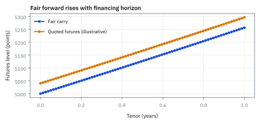
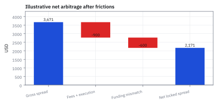
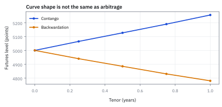

19.1 Cost of Carry and Cash-and-Carry Arbitrage
ราคาล่วงหน้าไม่ได้มาจากการเดาว่าของจะแพงขึ้นเท่าไร แต่มาจากต้นทุนของการซื้อของวันนี้แล้วถือไว้จนถึงวันส่งมอบ
ดัชนี S&P 500 อยู่ที่ 5,000 จุด สัญญา ES ที่หมดอายุในอีก 6 เดือนเสนอขายที่ 5,200 จุด สัญญาละ \$50 ต่อจุด โต๊ะของคุณกู้เงินได้ 5% ต่อปีแบบทบต้นต่อเนื่อง เพื่อนร่วมโต๊ะบอกว่า “futures แพงกว่าดัชนี 200 จุด ซื้อหุ้นทั้งตะกร้าแล้วขาย ES ไว้ ได้ \$10,000 ต่อสัญญาแน่นอน” ล็อกได้จริงเท่าไร? (ตอนนี้สมมติว่าหุ้นในดัชนีไม่จ่ายปันผล เราจะเติมปันผลกลับเข้ามาตอนท้ายหน้า และในหน้า ปันผลในสูตรราคา)
ลองตอบก่อนเปิดเฉลย
ได้ \$3,671.22 ต่อสัญญา ไม่ใช่ \$10,000 เงิน \$250,000 ที่กู้มาซื้อหุ้นโตเป็นหนี้ \$256,328.78 ในหกเดือน ส่วนต่างที่ล็อกได้จริงจึงเหลือ 73.42 จุด ไม่ใช่ 200 จุด ถ้าโต๊ะกู้ได้จริงที่ 6% จะเหลือ \$2,386.37 และเมื่อหักค่าซื้อขายที่ประเมินไว้ \$900 เหลือ \$1,486.37 ทุกตัวเลขรู้ตั้งแต่วันนี้ ไม่ว่าดัชนีจะจบที่เท่าไร
ภาพรวมก่อนลงสูตร
forward คือสัญญาที่ตกลงราคาวันนี้ แต่ส่งของและจ่ายเงินวันหน้า ทั้งสองฝ่ายต้องทำตาม คำถามคือราคาที่ตกลงกันควรเป็นเท่าไร คำตอบไม่ได้มาจากการเดาอนาคต แต่มาจากการสังเกตว่ามีสองทางที่จบด้วยการมีหุ้นทั้งตะกร้าในวันส่งมอบ ทางแรกคือซื้อ forward ทางที่สองคือกู้เงินมาซื้อหุ้นวันนี้แล้วถือไว้ ถ้าสองทางนี้ต้นทุนไม่เท่ากัน ใครก็ทำทางถูกพร้อมกับขายทางแพง แล้วเก็บส่วนต่างได้ฟรี
ต้นทุนของการถือของไว้จนถึงวันส่งมอบเรียกว่า cost of carry ถ้าเป็นหุ้นที่ไม่จ่ายปันผล ต้นทุนนี้คือดอกเบี้ยของเงินที่จมอยู่อย่างเดียว เหตุผลเดียวกับที่ใช้ใน ETF creation-redemption arbitrage คือของสองชิ้นที่ให้ผลเหมือนกันต้องราคาเท่ากัน และเหตุผลเดียวกับ มูลค่าเงินตามเวลา คือเงินคนละวันเอามาลบกันตรง ๆ ไม่ได้
หน้านี้ลงบัญชีดีลของเพื่อนด้วยมือ สร้างสูตร $F_0=S_0e^{rT}$ จากสองทิศของ arbitrage ขยายเป็นช่วงเมื่อกู้แพงกว่าฝาก ตีราคาสัญญาที่ทำไว้แล้ว เติมปันผลและค่าเก็บของ แล้วจบที่คำถามว่าราคาล่วงหน้าเป็นคำพยากรณ์หรือไม่ รูปด้านล่างคือดีลทั้งก้อนในสองวัน
รูป — เงินและหุ้นไหลอย่างไรใน cash-and-carry หนึ่งสัญญา
ศัพท์ที่ใช้ในหัวข้อนี้
- Forward
- สัญญาที่ให้ผู้ซื้อทั้งสิทธิ์และหน้าที่ต้องซื้อของจำนวนที่ระบุ ในวันที่ระบุ ที่ราคา $F$ ซึ่งตกลงไว้วันนี้ เช่น หุ้นส่งมอบใน 6 เดือน ทองคำใน 1 ปี หรือเงินยูโรมูลค่า \$10 ล้านใน 3 เดือน ต่างจาก option ที่ผู้ถือเลือกไม่ใช้สิทธิ์ได้ วันที่ทำสัญญาไม่มีใครจ่ายเงินให้ใคร
- Futures
- forward แบบมาตรฐานที่ซื้อขายในตลาดกลาง ผ่านสำนักหักบัญชี กำไรขาดทุนถูกโอนเป็นเงินสดทุกเย็นแทนที่จะรอวันหมดอายุ (ดู mark-to-market และ margin) มีไว้เพื่อให้ไม่ต้องกังวลว่าคู่สัญญาจะหนีหนี้
- ES (E-mini S&P 500)
- futures บนดัชนี S&P 500 ของตลาด CME จุดละ \$50 หมดอายุทุกไตรมาส ชำระด้วยเงินสดตามระดับดัชนีวันหมดอายุ ไม่มีการส่งหุ้นจริง เป็นสัญญาตัวอย่างตลอดบทนี้
- Short selling
- ขายหุ้นที่เราไม่มี โดยยืมจากโบรกเกอร์มาขาย แล้วต้องซื้อคืนมาคืนในภายหลัง (เรียกว่า cover) ได้กำไรเมื่อราคาตก ขาดทุนได้ไม่จำกัดเมื่อราคาขึ้น เป็นขาสำคัญของ arbitrage ฝั่งที่ราคาล่วงหน้าถูกเกินไป
- Cost of carry
- ต้นทุนสุทธิของการถือของจริงไว้จนถึงวันส่งมอบ: ดอกเบี้ยของเงินที่จมอยู่ บวกค่าเก็บ ลบรายได้ที่ของจ่ายระหว่างทาง ตัวนี้คือสิ่งที่ทำให้ราคาล่วงหน้าต่างจากราคาวันนี้
- Cash-and-carry
- กู้เงินมาซื้อของ ถือไว้ แล้วขายล่วงหน้าไว้ก่อน ใช้เก็บส่วนต่างเมื่อราคาล่วงหน้าแพงเกินต้นทุนการถือ ทิศกลับเรียก reverse cash-and-carry: ยืมของมาขาย เอาเงินไปฝาก แล้วซื้อล่วงหน้าไว้คืนของ ใช้เมื่อราคาล่วงหน้าถูกเกินไป
- Convenience yield
- ประโยชน์ของการมีของอยู่ในมือตอนนี้ เช่นโรงกลั่นที่ไม่อยากให้เครื่องหยุด เขียนเป็นอัตราต่อปี วัดตรงไม่ได้ ต้องถอยหลังหาจากราคาล่วงหน้าในตลาด
สัญลักษณ์และหน่วย
| สัญลักษณ์ | ความหมาย | หน่วย |
|---|---|---|
| $S_0,\ S_t,\ S_T$ | ราคาของหรือระดับดัชนีวันนี้ ระหว่างทาง และวันส่งมอบ | จุด หรือ \$ ต่อหน่วย |
| $F_0,\ F_t$ | ราคาล่วงหน้าที่ตกลงวันนี้ และราคาล่วงหน้าของวันส่งมอบเดิมที่ตลาด quote ณ เวลา $t$ | จุด หรือ \$ ต่อหน่วย |
| $f_t$ | มูลค่าของสัญญาที่ทำไว้แล้ว ณ เวลา $t$ (ตัวเล็ก ต่างจากราคา $F$ ตัวใหญ่) | จุด |
| $T,\ t$ | อายุสัญญา และเวลาที่ผ่านไปแล้ว | ปี |
| $r,\ r_b,\ r_l$ | ดอกเบี้ยทบต้นต่อเนื่อง อัตรากู้ และอัตราฝาก | ต่อปี |
| $d(t,T)$ | discount factor: มูลค่า ณ เวลา $t$ ของเงิน 1 ที่ได้ ณ เวลา $T$ | ไม่มีหน่วย |
| $M$ | ตัวคูณสัญญา ES | \$ ต่อจุด |
| $D_0,\ q$ | มูลค่าวันนี้ของปันผลระหว่างทาง และปันผลเป็นอัตราต่อปี | จุด, ต่อปี |
| $u,\ y$ | ค่าเก็บของ และ convenience yield เป็นอัตราของมูลค่า | ต่อปี |
ขั้นที่ 1 — ลองด้วยมือ: ลงบัญชีดีลของเพื่อน แล้วให้ดัชนีจบสองแบบ
โจทย์ให้อะไรมาบ้าง: วันนี้กู้เงิน 5,000 จุด (คือ $5{,}000\times\$50=\$250{,}000$) ที่ 5% ต่อปีนาน 0.5 ปี เอาไปซื้อหุ้นทั้งตะกร้าให้ตรงกับดัชนีหนึ่งสัญญา แล้วขาย ES หนึ่งสัญญาที่ 5,200 วันหมดอายุ ES ชำระเป็นเงินสด เราจึงขายหุ้นทั้งตะกร้าที่ระดับดัชนีวันนั้น $S_T$ และสัญญาจ่ายให้เรา $5{,}200-S_T$ (ติดลบเมื่อดัชนีจบเหนือ 5,200) ลองให้ดัชนีจบที่ 4,000 และที่ 6,000
$L_T$ คือหนี้ ณ วันส่งมอบ $\Pi_T$ คือเงินที่เหลือหลังคืนหนี้ ดูสองบรรทัดกลาง ถ้าดัชนีจบที่ 4,000 หุ้นขายได้ 4,000 และสัญญาจ่ายเพิ่ม 1,200 ถ้าจบที่ 6,000 หุ้นขายได้ 6,000 แต่เราต้องจ่ายสัญญา 800 ทั้งสองทางได้ 5,200 พอดี เพราะเราถือของที่สัญญาอ้างอิงอยู่ในมือ ขาดทุนของขาหนึ่งคือกำไรของอีกขา ราคาปลายทางจึงหายไปจากบัญชี
เพื่อนนับ 200 จุดเพราะเอา 5,200 ไปลบ 5,000 ซึ่งเป็นเงินคนละวัน 5,000 จุดที่ยืมมาวันนี้ต้องคืน 5,126.58 จุดในวันส่งมอบ ส่วนที่เหลือให้เก็บจริงจึงมีแค่ 73.42 จุด
คำตอบ: $73.4244\times50=\$3{,}671.22$ ต่อสัญญา เท่ากันทั้งสองกรณี ไม่ใช่ $200\times50=\$10{,}000$
ตรวจเองใน 10 วินาที: ดอกเบี้ยแบบไม่ทบต้นคือ $5{,}000(0.05)(0.5)=125$ จุด หนี้ราว 5,125 ส่วนต่างราว 75 จุด ใกล้ 73.42 ส่วนที่ต่างอีก 1.58 จุดคือดอกเบี้ยของดอกเบี้ย ซึ่งขั้นถัดไปอธิบาย
รูป — ขาหุ้นกับขา ES หักล้างกันทุกระดับดัชนี
ขั้นที่ 2 — หนี้โตแบบไหน: ทบต้นกี่ครั้งต่อปี
บัญชีด้านบนใช้ $e^{rT}$ โดยยังไม่บอกว่ามาจากไหน ต้องตอบก่อนไปต่อ เพราะส่วนต่างที่เรากำลังล่ามีแค่ไม่กี่สิบจุด ถ้าคิดดอกเบี้ยผิดแบบ ตัวเลขก็ขยับไปหลายจุดแล้ว ตอนสร้าง มูลค่าเงินตามเวลา เราได้การทบต้นต่อเนื่องจากการซอยงวดให้ถี่ขึ้นเรื่อย ๆ ตรงนี้ใส่ตัวเลขของเราเข้าไป
ทบต้น $m$ ครั้งต่อปี แต่ละงวดได้ดอกเบี้ย $r/m$ และมีทั้งหมด $mT$ งวด ยิ่งซอยถี่ ดอกเบี้ยของดอกเบี้ยยิ่งมาก แต่เพิ่มน้อยลงเรื่อย ๆ จนหยุดที่ $e^{rT}$ เพราะ $(1+r/m)^{m}$ วิ่งเข้าหา $e^{r}$ เมื่อ $m$ โตไม่สิ้นสุด ปีละครั้งกับต่อเนื่องต่างกัน 3.10 จุด หรือ \$155.01 ต่อสัญญา ราว 4% ของกำไรทั้งก้อน จึงต้องใช้แบบเดียวกับที่อัตรานั้นถูก quote มา
บรรทัดสุดท้ายเขียนเรื่องเดียวกันด้วย discount factor $d(0,T)$ คือราคาวันนี้ของเงิน 1 ที่จะได้ในวันส่งมอบ หนี้ที่โตขึ้นคือการหารด้วย $d(0,T)$ วิธีเขียนนี้ใช้ได้กับทุกแบบการทบต้น เช่นทบปีละสองครั้ง $d(0,T)=1/(1+r/2)^{2T}$ ทำไมหน้านี้เลือก $e^{rT}$? อัตรา 5% ในโจทย์เป็นอัตราต่อเนื่องอยู่แล้ว และเลขชี้กำลังบวกกันได้: โต $t$ ปีแล้วโตต่ออีก $T-t$ ปี คือ $e^{rt}e^{r(T-t)}=e^{rT}$ ตอนตีราคาสัญญาระหว่างทางจะใช้คุณสมบัตินี้
ขั้นที่ 3 — สองทิศของ arbitrage บีบราคาล่วงหน้าให้เหลือค่าเดียว
บัญชีด้วยมือเป็นตัวเลขชุดเดียว ตอนนี้ทำแบบเดียวกันด้วยตัวอักษร เพื่อหาราคา $F_0$ ที่ไม่มีใครล็อกกำไรฟรีได้ arbitrage ในที่นี้คือรายการที่ใช้เงินตัวเองศูนย์ ไม่มีทางขาดทุน และได้เงินแน่นอน ถ้ามีรายการแบบนี้ ทุกคนจะแห่ทำจนราคาขยับหนีไป เราเขียนสองรายการที่เป็นกระจกของกัน รายการ $A$ คือ cash-and-carry และรายการ $B$ คือ reverse cash-and-carry ($V_0$ คือเงินที่ต้องใส่วันนี้ $V_T$ คือเงินที่ได้วันส่งมอบ)
รายการ $A$ กู้ $S_0$ มาซื้อของ แล้วขาย forward ที่ $F_0$ ในวันส่งมอบ ของมีค่า $S_T$ ต้องคืนหนี้ $S_0e^{rT}$ และสัญญาจ่าย $F_0-S_T$ รายการ $B$ ยืมของมาขาย (short selling) ได้เงิน $S_0$ เอาไปฝาก แล้วซื้อ forward ไว้รับของมาคืนผู้ให้ยืม ทั้งสองรายการเริ่มด้วยเงินตัวเองศูนย์ และ $S_T$ หักล้างกันหมดทั้งคู่ เหลือเงินที่รู้ตั้งแต่วันนี้
ถ้า $V_T^A$ เป็นบวก ใครก็ทำ $A$ ได้เงินฟรี ถ้า $V_T^B$ เป็นบวก ใครก็ทำ $B$ ได้เงินฟรี ตลาดที่ไม่มีเงินฟรีจึงต้องให้ทั้งสองไม่เกินศูนย์ แต่สองตัวนี้คือเลขเดียวกันที่กลับเครื่องหมาย ทางเดียวที่ทั้งคู่ไม่เกินศูนย์คือเป็นศูนย์พอดี จึงได้บรรทัดสุดท้าย ราคาล่วงหน้าคือมูลค่าในอนาคตของราคาวันนี้ ส่วนที่สูงกว่า $S_0$ คือ cost of carry ล้วน ๆ
สังเกตว่าสูตรไม่มีสิ่งที่ตลาดคาดว่าราคาจะขึ้นอยู่เลย ราคาล่วงหน้าถูกบีบด้วยต้นทุนของสองรายการ ไม่ใช่ด้วยความเห็น ขั้นสุดท้ายของหน้านี้จะกลับมาที่เรื่องนี้ด้วยตัวเลข
ขั้นที่ 4 — ตัวเลขของ ES: fair value ส่วนต่าง และเงินจริงต่อสัญญา
โจทย์ให้อะไรมาบ้าง: $S_0=5{,}000$ จุด $r=5\%$ ต่อปี $T=0.5$ ปี $M=\$50$ ต่อจุด ราคาบนจอ 5,200 จุด ยังไม่หักค่าซื้อขาย
ราคาที่สองทิศของ arbitrage บังคับเรียกว่า fair value ของ ES ราคาบนจอแพงกว่ามัน 73.42 จุด บรรทัดสุดท้ายอ่านตัวเลขเดียวกันอีกแบบ: แก้หาอัตราที่ทำให้ $5{,}000e^{r(0.5)}=5{,}200$ ได้ 7.84% ต่อปี เรียกว่า implied financing rate คือดอกเบี้ยที่คนทำ cash-and-carry ได้บนเงินที่จมในหุ้น ในขณะที่ต้นทุนกู้คือ 5% ส่วนต่างของสองอัตรานี้คือกำไร
คำตอบ: fair value 5,126.58 จุด ราคาบนจอแพงเกิน 73.42 จุด หรือ \$3,671.22 ต่อสัญญา ทุกคนที่กู้ได้ถูกกว่า 7.84% มีเหตุผลจะขาย ES แล้วซื้อหุ้น
ตรวจเองใน 10 วินาที: ซื้อหุ้น $5{,}000\times50=\$250{,}000$ หนี้ตอนจบ $5{,}126.5756\times50=\$256{,}328.78$ รับจากการขาย $5{,}200\times50=\$260{,}000$ ต่างกัน \$3,671.22 ตรงกับข้างบน
รูป — fair value ตามอายุสัญญา เทียบราคาสมมติ

แกนนอนคืออายุสัญญา 0 ถึง 1 ปี แกนตั้งเป็นจุดดัชนี เส้นแรกคือ fair value $5{,}000e^{0.05T}$ ซึ่งโตจาก 5,000 ถึง 5,256.36 ที่หนึ่งปี เพราะเงินยิ่งจมนานยิ่งเสียดอกเบี้ย เส้นที่สองเป็นราคาสมมติที่วางไว้เหนือ fair value 40 จุดเท่ากันทุกอายุ ไม่ใช่ราคาจริง ที่ครึ่งปีส่วนต่าง 40 จุดคือ \$2,000 ต่อสัญญา ซึ่งช่วงราคาเมื่อกู้แพงกว่าฝากในขั้นถัดไปจะแสดงว่ายังไม่พอจ่ายต้นทุนจริง
ขั้นที่ 5 — กู้แพงกว่าฝาก: ราคาไม่ได้เป็นจุด แต่เป็นช่วง
สองทิศของ arbitrage สมมติว่ากู้กับฝากได้อัตราเดียวกัน ของจริงไม่ใช่ โต๊ะนี้กู้ได้ $r_b=6\%$ ฝากได้ $r_l=4\%$ รายการ $A$ ต้องกู้ จึงใช้อัตรากู้ รายการ $B$ เอาเงินไปฝาก จึงใช้อัตราฝาก สองรายการจึงไม่เป็นกระจกของกันพอดีอีกต่อไป และแต่ละรายการให้ขอบคนละข้าง
เพดานมาจากรายการ $A$ ที่ต้องกู้ พื้นมาจากรายการ $B$ ที่ได้แค่ดอกเบี้ยเงินฝาก ราคาใดก็ตามระหว่าง 5,101.01 ถึง 5,152.27 ไม่เปิดให้ใครทำเงินฟรี ช่วงกว้าง 51.27 จุดนี้เกิดจากดอกเบี้ยที่ต่างกัน 2% อย่างเดียว ของจริงยังกว้างกว่านี้ เพราะคนที่ขายชอร์ตหุ้นมักได้ดอกเบี้ยจากเงินที่ขายได้ไม่เต็มอัตรา และต้องจ่ายค่ายืมหุ้น
5,200 ยังอยู่เหนือเพดาน โต๊ะที่กู้ 6% จึงยังล็อกได้ 47.73 จุด หรือ \$2,386.37 ต่อสัญญา ดอกเบี้ยที่แพงขึ้น 1% กินไป \$1,284.85 แล้วค่าซื้อขายที่ประเมินไว้ \$900 (ค่าคอมมิชชัน และส่วนต่าง bid–ask ของหุ้นหลายร้อยตัวกับของ ES) เหลือ \$1,486.37 ตัวเลขสุดท้ายนี้ต้องเป็นบวกดีลจึงคุ้มส่งคำสั่ง
รูป — ช่วงราคาที่ไม่มีใครทำเงินฟรีได้
รูป — ส่วนต่างที่เหลือหลังดอกเบี้ยจริงและค่าซื้อขาย

แท่งแรกคือกำไร \$3,671.22 ถ้ากู้ได้ 5% แท่งแดงสองแท่งคือส่วนที่หายเมื่อกู้จริงที่ 6% \$1,284.85 และค่าซื้อขายที่สมมติไว้ \$900 แท่งสุดท้ายคือ \$1,486.37 ที่เหลือจริง ป้ายบนรูปปัดเป็นดอลลาร์เต็ม (3,671, −1,285, −900, 1,486) ตัวเลข \$900 เป็นค่าประมาณสำหรับสอน ไม่ใช่ค่าธรรมเนียมจริงของโบรกเกอร์ใด
ขั้นที่ 6 — สัญญาที่ทำไว้แล้ว มีค่าเท่าไรระหว่างทาง
วันที่ทำสัญญา forward มีค่าศูนย์ แต่พอดัชนีขยับ สัญญาเดิมก็มีค่าเป็นบวกหรือลบ เราต้องรู้ค่านี้ทุกวัน ทั้งเพื่อรายงานกำไรขาดทุน และเพราะ futures โอนค่านี้เป็นเงินสดทุกเย็น (เรื่องของ mark-to-market และ margin) สมมติเราซื้อ forward ไว้ที่ราคา fair $F_0=5{,}126.5756$ ผ่านไป 3 เดือน ดัชนีเป็น 5,100 ดอกเบี้ยยัง 5% วิธีหาค่าคือปิดความเสี่ยงของสัญญาเดิมด้วยสัญญาใหม่ที่ไม่มีต้นทุน แล้วดูว่าเหลืออะไรที่รู้แน่
ที่เวลา $t$ เราขาย forward ใหม่ที่ราคาตลาด $F_t$ ซึ่งไม่มีต้นทุน สองสัญญารวมกันจ่าย $F_t-F_0$ ในวันส่งมอบ ไม่ว่าดัชนีจะไปทางไหน ของที่จ่ายแน่นอนมีค่าวันนี้เท่ากับคิดลดกลับมาด้วย $d(t,T)=e^{-r(T-t)}$ จังหวะที่ทำให้สูตรสั้นลงคือแทน $F_t=S_te^{r(T-t)}$ แล้ว $e^{r(T-t)}e^{-r(T-t)}=1$ เหลือแค่ดัชนีวันนี้ลบราคาเดิมที่คิดลดแล้ว
5,062.89 คือหนี้ 5,000 จุดที่โตมาสามเดือนพอดี $5{,}000e^{0.0125}$ มูลค่าสัญญาจึงเท่ากับดัชนีลบหนี้สะสมถึงวันนี้ เหมือนปิดดีลวันนี้ ได้ 37.11 จุด หรือ \$1,855.39 ต่อสัญญา จุดที่คนมักพลาดคือดอกเบี้ยที่ใช้คิดลดต้องเป็นของวันนี้ ไม่ใช่ของวันที่ทำสัญญา ถ้าดอกเบี้ยขึ้นเป็น 6% หนี้ปลายทางมีค่าวันนี้น้อยลงเหลือ 5,050.25 สัญญาฝั่งซื้อจึงมีค่าขึ้นเป็น 49.75 จุด (\$2,487.46) ทั้งที่ดัชนีเท่าเดิม
รูป — ราคาล่วงหน้าวิ่งเข้าหาราคา spot ในวันส่งมอบ
ขั้นที่ 7 — ของที่จ่ายเงินระหว่างถือ: ปันผลทำให้ราคาล่วงหน้าต่ำลง
ดัชนีจริงจ่ายปันผล คนที่ถือหุ้นในรายการ $A$ ได้ปันผลระหว่างทาง คนที่ถือ forward ไม่ได้ เงินนั้นช่วยใช้หนี้ รายการ $A$ จึงถูกกว่าเดิม ลงบัญชีรายการ $A$ ใหม่ โดยให้ $D_0$ คือมูลค่าวันนี้ของปันผล และปันผลที่ได้ถูกฝากทันทีจนถึงวันส่งมอบ
ปันผลที่ได้กลางทางแล้วฝากต่อจนถึงวันส่งมอบ มีค่าที่วันส่งมอบเท่ากับ $D_0e^{rT}$ พอดี เพราะ $D_0$ คือมันที่คิดลดมาวันนี้ ศูนย์ของรายการ $A$ จึงเกิดที่ $F_0=(S_0-D_0)e^{rT}$ คือหักปันผลที่มูลค่าวันนี้ก่อน แล้วค่อยทบต้น ไม่ใช่เอา 30 ไปลบ 5,126.58 ตรง ๆ ปันผลที่ได้เร็วถูกฝากกินดอกต่อ จึงลด forward ลง $30e^{0.025}=30.76$ จุด
ถ้าปันผลไหลเข้ามาเรื่อย ๆ เป็นอัตรา $q$ ต่อปีของราคา สูตรเดียวกันเขียนเป็น $S_0e^{(r-q)T}$ ที่ $q=1.5\%$ ได้ 5,088.27 จุด ปันผลจึงทำให้ 5,200 ยิ่งแพงเกิน fair value หน้า ปันผลในสูตรราคา ลงบัญชีทั้งสองแบบทีละขั้น แล้วพาเข้าไปในต้นไม้ binomial และสูตร Black–Scholes
ขั้นที่ 8 — ของที่ต้องเก็บและยืมไม่ได้: เหลือแค่เพดาน กับ convenience yield
น้ำมัน ก๊าซ ทองแดง ต้องมีที่เก็บและมีค่าเก็บ เราเขียนค่าเก็บเป็นอัตรา $u$ ต่อปีของมูลค่าของ รายการ $A$ ยังทำได้ครบ: กู้ซื้อ เก็บ แล้วขายล่วงหน้า แต่รายการ $B$ ต้องยืมน้ำมันจริงมาขายวันนี้ ซึ่งแทบไม่มีใครให้ยืม คนที่มีน้ำมันในถังคือโรงกลั่นที่ต้องใช้มันเดินเครื่อง ตัวอย่างสมมติ: น้ำมันดิบ spot \$80 ต่อบาร์เรล futures 6 เดือน \$78 ดอกเบี้ย 5% ค่าเก็บ 3% ต่อปี
บรรทัดแรกคือเพดานจากรายการ $A$ ที่ตอนนี้ต้องจ่ายทั้งดอกเบี้ยและค่าเก็บ ถ้า futures แพงกว่า 83.26 ใครที่มีถังเก็บก็กู้ซื้อน้ำมันแล้วขายล่วงหน้าได้เงินฟรี แต่ 78 ที่ต่ำกว่า spot ไม่ใช่เงินฟรี การเก็บส่วนต่างฝั่งนี้ต้องใช้รายการ $B$ ซึ่งทำไม่ได้ ราคาจึงอยู่ต่ำกว่าเพดานได้นานเท่าไรก็ได้
บรรทัดที่สองเป็นนิยาม ไม่ใช่ผลที่พิสูจน์: ตลาดเขียนราคาเป็นอัตรา แล้วเรียกตัวที่ทำให้สมการตรงกับราคาจริงว่า convenience yield $y$ ได้ 13.06% ต่อปี เกินดอกเบี้ยกับค่าเก็บรวมกัน 5.06% ต่อปี คนมีน้ำมันให้ค่ากับการมีของตอนนี้สูงจนไม่อยากเก็บไว้ขายทีหลัง หน้า derivatives บนก๊าซและไฟฟ้า ใช้นิยามเดียวกันกับก๊าซหน้าหนาว
รูป — contango กับ backwardation

ราคาสองชุดเป็นตัวเลขสมมติ หน่วยเป็นจุด อายุ 0, 0.25, 0.5, 0.75 และ 1 ปี เส้นที่ไล่ขึ้น (contango) 5,000 ถึง 5,256 ใกล้ fair value ที่ 5% อัตราที่ซ่อนอยู่ในแต่ละจุดอยู่ระหว่าง 4.97% ถึง 5.17% ต่อปี เส้นที่ไล่ลง (backwardation) ถึง 4,780 ที่หนึ่งปี คือ $\ln(4{,}780/5{,}000)=-4.50\%$ ต่อปี ถ้าเป็นดัชนีหุ้นที่ดอกเบี้ย 5% ต้องมีปันผล 9.50% ต่อปี ถ้าเป็นสินค้าโภคภัณฑ์แปลว่า $y-u=9.50\%$ รูปร่างของเส้นบอกต้นทุนการถือสุทธิ ไม่ได้บอกว่ามีเงินฟรี
ขั้นที่ 9 — ราคาล่วงหน้าไม่ใช่คำพยากรณ์
โจทย์ให้อะไรมาบ้าง: สมมติทุกคนในตลาดเชื่อว่าดัชนีจะโตเฉลี่ย 9% ต่อปี (ทบต้นต่อเนื่อง) ดัชนีที่คาดในอีก 6 เดือนเป็นเท่าไร และ fair value ของ ES เปลี่ยนไหม ลองดูอีกมุมด้วย binomial tree $n$ งวด ดอกเบี้ยต่องวด $R$ ซึ่งตั้งราคาด้วยโอกาสตั้งราคา $\mathbb Q$ ที่ทำให้หุ้นโตเฉลี่ยเท่าดอกเบี้ย
บรรทัดแรกบอกว่า forward ต้องมีค่าศูนย์วันทำสัญญา ค่าของสิ่งใดก็ตามใน binomial tree คือค่าเฉลี่ยภายใต้ $\mathbb Q$ ของเงินที่ได้ คิดลดด้วย $R^n$ เพราะ $R^n$ เป็นค่าคงที่ จึงย้ายออกมาได้ และได้ $F_0=\mathbb E^{\mathbb Q}_0[S_T]$ ภายใต้ $\mathbb Q$ หุ้นโตเท่าดอกเบี้ยพอดี จึงได้ $S_0R^n$ ซึ่งคือ $S_0e^{rT}$ ตัวเดียวกับที่สองทิศของ arbitrage ให้มา สองวิธีให้คำตอบเดียวกัน
ความเชื่อ 9% ไม่ได้อยู่ในรายการไหนเลย fair value จึงยังเป็น 5,126.58 คนที่ขาย ES ที่ราคานี้ทั้งที่คาดว่าดัชนีจะไป 5,230 ไม่ได้โง่ เขาถือหุ้นแล้วขาย ES จึงได้ 5% แน่นอน และยกผลตอบแทนส่วนเกินที่ไม่แน่นอนให้คนซื้อ ES ไป ส่วนต่าง 103.56 จุดจึงเป็นค่าตอบแทนของการรับความเสี่ยง ไม่ใช่ราคาผิด ในภาษาของ risk-neutral measure ราคาล่วงหน้าคือค่าเฉลี่ยของ $S_T$ ภายใต้ $\mathbb Q$ ไม่ใช่ค่าเฉลี่ยในโลกจริง
คำตอบ: ดัชนีที่คาดคือ 5,230.14 จุด แต่ fair value ของ ES ยังเป็น 5,126.58 จุด ซื้อ ES เพราะเชื่อว่าดัชนีจะไป 5,230 คือการรับความเสี่ยง ไม่ใช่ arbitrage
ตรวจเองใน 10 วินาที: $9\%-5\%=4\%$ ต่อปี ครึ่งปีคือ 2% ของ 5,000 เท่ากับ 100 จุด ใกล้ 103.56
ความผิดที่ให้คำตอบผิดแบบเงียบ ๆ
นับส่วนต่างกับ spot เป็นกำไร: 200 จุดคือ \$10,000 แต่ของจริงคือ \$3,671.22 ส่วนต่างที่ต้องเทียบคือกับ fair value ไม่ใช่กับราคาวันนี้
คิดดอกเบี้ยคนละแบบกับที่ quote: ใช้ดอกเบี้ยไม่ทบต้น หนี้เป็น 5,125 ส่วนต่างเป็น 75 จุด หรือ \$3,750 เกินจริง \$78.78 ต่อสัญญา มากพอจะเปลี่ยนดีลขาดทุนให้ดูมีกำไร
ตีราคาสัญญาเก่าด้วยดอกเบี้ยวันทำสัญญา: ดัชนี 5,100 หลังสามเดือน ถ้าดอกเบี้ยขึ้นเป็น 6% แต่ยังคิดลดด้วย 5% จะได้ 37.11 จุดแทนที่จะเป็น 49.75 จุด ต่างกัน \$632.07 ต่อสัญญา
ลืมปันผลของดัชนี: ถ้าปันผลมีค่าวันนี้ 30 จุด fair value คือ 5,095.82 ไม่ใช่ 5,126.58 ห่างกัน 30.76 จุด หรือ \$1,537.97 ต่อสัญญา
ใช้พื้นกับของที่ยืมไม่ได้: น้ำมัน \$78 ต่ำกว่าเพดาน 83.26 แต่ไม่ใช่สัญญาณให้ซื้อ futures แล้วขายน้ำมัน เพราะไม่มีน้ำมันให้ยืมมาขาย
เห็นราคาเหนือ fair value แล้วรีบส่งคำสั่ง: ราคาสมมติในรูป fair value ตามอายุสัญญา ที่อยู่เหนือ fair value 40 จุดตอนครึ่งปี เหลือแค่ 14.30 จุด (\$715.15) เมื่อกู้ที่ 6% และติดลบ \$184.85 หลังค่าซื้อขาย \$900
ใช้ทำอะไรบนโต๊ะจริง
โต๊ะ index arbitrage คำนวณ fair value ของ ES ทุกเช้าจากดอกเบี้ยและปันผลที่คาด แล้วตั้งขอบบนล่างจากต้นทุนกู้ ฝาก ยืมหุ้น และค่าซื้อขายของตัวเอง ราคาหลุดขอบเมื่อไรจึงส่งคำสั่งทั้งสองขาพร้อมกัน ES ชำระเป็นเงินสดตามดัชนีที่คำนวณจากราคาเปิดของหุ้นทุกตัวในวันหมดอายุ โต๊ะจึงส่งคำสั่งขายหุ้นทั้งตะกร้าตอนเปิดตลาดเช้าวันนั้น เพื่อให้ได้ราคาตรงกับค่าที่ใช้ชำระ ช่องราคาที่หลุดขอบมักปิดในไม่กี่วินาที เพราะหลายโต๊ะเห็นมันพร้อมกัน
ผู้จัดการกองทุนที่ต้องการ exposure ของดัชนีเลือกระหว่างซื้อหุ้นจริงกับซื้อ ES โดยเทียบ implied financing rate กับต้นทุนเงินของตัวเอง ใน ES ตัวอย่าง ราคาบนจอซ่อนดอกเบี้ย 7.84% ถ้ากองทุนกู้ได้ 5% การถือหุ้นจริงถูกกว่า ส่วนโต๊ะสินค้าโภคภัณฑ์อ่าน convenience yield จากเส้นราคาล่วงหน้าเพื่อตัดสินใจว่าจะเก็บสต็อกหรือขายออก
โจทย์ตรวจความเข้าใจ
1. หุ้นราคา \$50 ไม่จ่ายปันผล ดอกเบี้ย 4% ต่อปีทบต้นปีละสองครั้ง forward อายุ 6 เดือนควรเป็นเท่าไร และถ้าตลาด quote \$51.40 ต้องทำรายการไหน ได้เท่าไรต่อหุ้น?
เฉลย
ครึ่งปีคือหนึ่งงวด ดอกเบี้ย $0.04/2=2\%$ discount factor คือ $d(0,0.5)=1/1.02=0.9804$ จึงได้ $F_0=50/0.9804=\$51.00$ ราคา 51.40 แพงกว่า fair จึงทำ cash-and-carry: กู้ \$50 ซื้อหุ้น ขาย forward ที่ 51.40 ครบหกเดือนส่งหุ้นได้ 51.40 คืนหนี้ $50(1.02)=51.00$ เหลือ \$0.40 ต่อหุ้น ไม่ว่าหุ้นจะจบที่เท่าไร
2. ES อายุ 3 เดือน quote ที่ 5,050 ดัชนี 5,000 กู้และฝากได้ 5% ต่อปีเท่ากัน ราคานี้ถูกหรือแพง ทำรายการไหน ได้เท่าไรต่อสัญญา?
เฉลย
fair value $5{,}000e^{0.05(0.25)}=5{,}062.89$ ราคา 5,050 ถูกไป 12.89 จุด จึงทำ reverse cash-and-carry: ยืมหุ้นทั้งตะกร้ามาขาย ได้ 5,000 จุด เอาไปฝาก แล้วซื้อ ES ที่ 5,050 ครบสามเดือนเงินฝากเป็น 5,062.89 ใช้ซื้อหุ้นคืนผ่าน ES ที่ต้นทุนรวม 5,050 เหลือ 12.89 จุด หรือ $12.8923\times50=\$644.61$ ต่อสัญญา ก่อนหักค่ายืมหุ้น ซึ่งอาจกินส่วนนี้ไปมาก
3. forward ฝั่งซื้อที่ราคา 5,126.5756 ผ่านไป 3 เดือน ดัชนีตกเป็น 4,900 ดอกเบี้ยยัง 5% สัญญามีค่าเท่าไรต่อสัญญา?
เฉลย
$f_t=4{,}900-5{,}126.5756e^{-0.0125}=4{,}900-5{,}062.89=-162.89$ จุด หรือ $-162.8923\times50=-\$8{,}144.61$ ต่อสัญญา ตรวจอีกทาง: ดัชนีลบหนี้ 5,000 จุดที่โตมาสามเดือน $4{,}900-5{,}000e^{0.0125}$ ได้ค่าเดียวกัน ถ้าเป็น futures เงินก้อนนี้ถูกเรียกเป็นเงินสดไปแล้วทีละวันผ่านบัญชี margin
คำนวณซ้ำด้วย JavaScript
เปิดดูโค้ด
const {exp, log} = Math;
// Money grows m times a year at rate r; m = Infinity means continuous.
function grow(amount, r, T, m) {
if (m === Infinity) return amount * exp(r * T);
return amount * (1 + r / m) ** (m * T);
}
// Fair forward from cost of carry: (S - D0) e^{(r + u - q - y) T}.
function fairForward({S, r, T, q = 0, u = 0, y = 0, D0 = 0}) {
return (S - D0) * exp((r + u - q - y) * T);
}
// Value today of a long forward struck at F0, tau years left.
function forwardValue(St, F0, r, tau) {
return St - F0 * exp(-r * tau);
}
const fair = fairForward({S: 5000, r: 0.05, T: 0.5});
const high = fairForward({S: 5000, r: 0.06, T: 0.5});
const low = fairForward({S: 5000, r: 0.04, T: 0.5});
console.log('debt by m', [1, 2, 12, 365, Infinity].map(m => grow(5000, 0.05, 0.5, m).toFixed(4)));
console.log('fair', fair.toFixed(4), 'gap USD', ((5200 - fair) * 50).toFixed(2));
console.log('implied rate', (log(5200 / 5000) / 0.5).toFixed(4));
console.log('band', low.toFixed(4), high.toFixed(4));
console.log('net at 6% after fees', ((5200 - high) * 50 - 900).toFixed(2));
console.log('value at 3m', forwardValue(5100, fair, 0.05, 0.25).toFixed(4),
'at 6%', forwardValue(5100, fair, 0.06, 0.25).toFixed(4));
console.log('with D0=30', fairForward({S: 5000, r: 0.05, T: 0.5, D0: 30}).toFixed(2),
'with q=1.5%', fairForward({S: 5000, r: 0.05, T: 0.5, q: 0.015}).toFixed(2));
console.log('oil ceiling', fairForward({S: 80, r: 0.05, T: 0.5, u: 0.03}).toFixed(2),
'conv. yield', (0.08 - log(78 / 80) / 0.5).toFixed(4));
console.log('expected at 9%', grow(5000, 0.09, 0.5, Infinity).toFixed(2));สิ่งที่ควรตอบได้หลังอ่าน
- ส่วนต่างกับ spot ไม่ใช่กำไร: 200 จุดเหลือ 73.42 จุด (\$3,671.22 ต่อสัญญา) หลังหักดอกเบี้ยของเงินที่กู้มาซื้อหุ้น
- ราคาล่วงหน้ามาจากสองทิศของ arbitrage ที่ใช้เงินศูนย์ ได้ $F_0=S_0e^{rT}=S_0/d(0,T)$ โดยไม่ต้องรู้ว่าตลาดคาดอะไร และเท่ากับ $\mathbb E^{\mathbb Q}[S_T]$ ใน binomial tree
- กู้แพงกว่าฝากทำให้ราคาเป็นช่วง 5,101.01 ถึง 5,152.27 และต้นทุนจริงกินกำไรเหลือ \$1,486.37
- สัญญาที่ทำไว้แล้วมีค่า $(F_t-F_0)d(t,T)=S_t-F_0e^{-r(T-t)}$ คือ 37.11 จุดเมื่อดัชนีขึ้นเป็น 5,100 หลังสามเดือน และราคาล่วงหน้าวิ่งเข้าหา spot ในวันส่งมอบ
- ปันผลลดราคาล่วงหน้าเป็น $(S_0-D_0)e^{rT}$ ค่าเก็บเพิ่มเพดาน ของที่ยืมไม่ได้เหลือแค่เพดาน และ convenience yield คือตัวที่ทำให้ $S_0e^{(r+u-y)T}$ ตรงกับราคาตลาด
หน้าถัดไป mark-to-market, margin และ basis risk ถามต่อว่า ถ้ามูลค่าของสัญญาระหว่างทางถูกโอนเป็นเงินสดทุกเย็นแทนที่จะรอวันหมดอายุ บัญชีของเราจะหน้าตาอย่างไร และต้องเตรียมเงินสดไว้เท่าไร